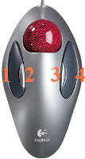

Logitech Marblemouse
Dieser Artikel wurde für die folgenden Ubuntu-Versionen getestet:
Ubuntu 16.04 Xenial Xerus
Zum Verständnis dieses Artikels sind folgende Seiten hilfreich:
Dieser Artikel beschreibt das Einrichten der Logitech Marble Maus und des Logitech Trackman® Marble® mit Hilfe des Eingabeprotokolls evdev.
|  |
| Trackman Marble |
Hinweis:
Ab Artful Aardavak funktioniert diese Anleitung so nicht mehr, da dort Wayland zur Anwendung kommt.
Einrichtung¶
Um die Scrollfunktion und die zusätzlichen Tasten dieses Trackball nutzen zu können, muss in einem Editor mit Root-Rechten [1] [2] die Datei /usr/share/X11/xorg.conf.d/50-marblemouse.conf mit folgendem Inhalt erstellt werden:
Beispielkonfigurationen¶
Es sind verschiedene Beispiele aufgeführt. Die Belegung der Vor- und Zurück-Tasten sowie der linken und rechten Taste können frei definiert werden.
Zum besseren Verständnis der Konfigurationsdatei / Grafik:
Die Bedienelemente 1 - 4 auf der Grafik entsprechen in der Konfigurationsdatei:
1,8,9und3.
Beispiel 1¶
Zur Deaktivierung des Mittelklicks den Wert in der Zeile Option "Emulate3Buttons" von "true" auf "false"ändern.
Section "InputClass"
Identifier "Marble Mouse"
MatchProduct "Logitech USB Trackball"
MatchIsPointer "on"
MatchDevicePath "/dev/input/event*"
Driver "evdev"
Option "ButtonMapping" "1 2 3 4 5 6 7 8 9"
Option "EmulateWheel" "true"
Option "EmulateWheelButton" "8"
Option "ZAxisMapping" "4 5"
Option "XAxisMapping" "6 7"
Option "Emulate3Buttons" "true"
EndSection
| Tastenbelegung | |
| Taste | Funktion |
| 1 |  |
| 2 | Einfacher Klick = Zurück-Funktion im Browser, gedrückt halten - mit der Kugel horizontal und vertikal scrollen. |
| 3 | Einfacher Klick = Vorwärts-Funktion im Browser |
| 4 |  |
| 1 und 4 |  |
Hinweis:
Unter Umständen muss in dconf im Schema /org/gnome/settings-daemon/peripherals/mouse der Schlüssel middle-button-enabled auf true gesetzt werden.
Beispiel 2¶
Section "InputClass"
Identifier "Marble Mouse"
MatchProduct "Logitech USB Trackball"
MatchIsPointer "on"
MatchDevicePath "/dev/input/event*"
Driver "evdev"
Option "SendCoreEvents" "true"
# Physical buttons come from the mouse as:
# Big: 1 3
# Small: 8 9
#
# This makes left small button (8) into the middle, and puts
# scrolling on the right small button (9).
#
Option "Buttons" "9"
Option "ButtonMapping" "1 8 3 4 5 6 7 2 9"
Option "EmulateWheel" "true"
Option "EmulateWheelButton" "9"
Option "YAxisMapping" "4 5"
Option "XAxisMapping" "6 7"
EndSection
| Tastenbelegung | |
| Taste | Funktion |
| 1 | |
| 2 | |
| 3 | Taste gedrückt halten - mit der Kugel horizontal und vertikal scrollen. |
| 4 | |
Beispiel 3¶
Section "InputClass"
Identifier "Marble Mouse"
MatchProduct "Logitech USB Trackball"
MatchIsPointer "on"
MatchDevicePath "/dev/input/event*"
Driver "evdev"
Option "SendCoreEvents" "true"
Option "Buttons" "9"
Option "ButtonMapping" "1 8 3 4 5 6 7 2 9"
Option "EmulateWheel" "true"
Option "EmulateWheelButton" "9"
Option "ZAxisMapping" "4 5"
EndSection
| Tastenbelegung | |
| Taste | Funktion |
| 1 | |
| 2 | |
| 3 | Taste gedrückt halten - mit der Kugel vertikal scrollen. |
| 4 | |
Links¶
Diskussionsbeitrag zum Thema im Forum
xbindkeys - Weiterführender Artikel zur Tastenbelegung von Mäusen allgemein

- Erstellt mit Inyoka
-
 2004 – 2017 ubuntuusers.de • Einige Rechte vorbehalten
2004 – 2017 ubuntuusers.de • Einige Rechte vorbehalten
Lizenz • Kontakt • Datenschutz • Impressum • Serverstatus -
Serverhousing gespendet von